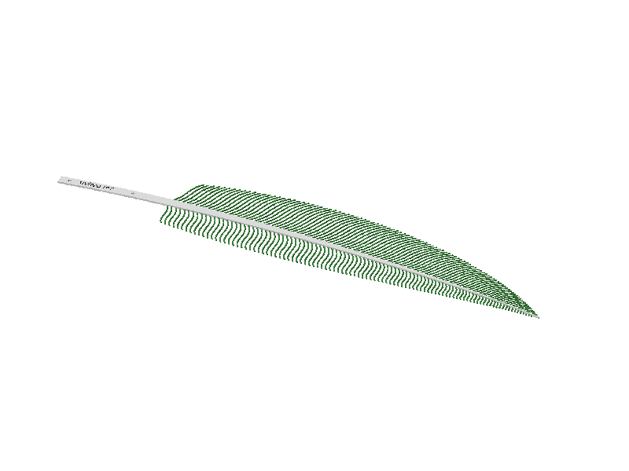
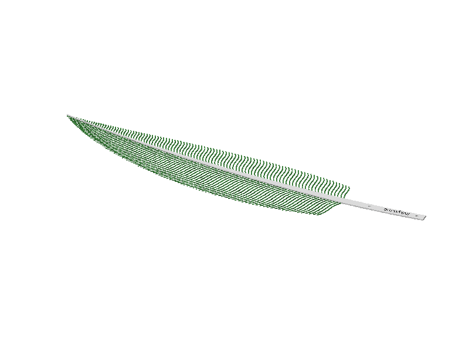

feather
Drafted with AI, not yet reviewed
by Reifeather/feather-bezier.scad
A feather the length of a printer bed’s diagonal: a tapering stem and two hundred barbs, every one a cubic Bézier curve, where each curve is cut into straight segments and drawn as a polygon.
The barbs’ control points are themselves points on Bézier curves: four
curves run from the quill to the tip, and a barb at t joins their points
at t, so the barbs sweep and bend as they go along the stem.
bezier_stroke() draws each as a smooth curve, with round ends, at the
stroke’s true width all along. The barbs keep the round ends, half a
barb’s width past OpenSCAD’s square ones; the stem’s are cut square.
The text is in the default font: the OpenSCAD design names JetBrains
Mono Bold, which a font option gives where it is installed.


Files
Source
// SPDX-License-Identifier: 0BSD // // A feather the length of a printer bed's diagonal: a tapering stem and // two hundred barbs, every one a cubic Bézier curve; ported from OpenSCAD, // where each curve is cut into straight segments and drawn as a polygon. // // The barbs' control points are themselves points on Bézier curves: four // curves run from the quill to the tip, and a barb at t joins their points // at t, so the barbs sweep and bend as they go along the stem. // bezier_stroke() draws each as a smooth curve, with round ends, at the // stroke's true width all along. The barbs keep the round ends, half a // barb's width past OpenSCAD's square ones; the stem's are cut square. // The text is in the default font: the OpenSCAD design names JetBrains // Mono Bold, which a `font` option gives where it is installed. // --- Parameters --- const N = 0.4; // nozzle width const L = N / 2.0; // layer height const BED = [225.0, 225.0]; const STEM_LAYERS = 6; const BARB_LAYERS = 3; const COVERAGE = 0.8; // how much of the stem has barbs const BARBS = 125; // barbs per side, were the whole stem covered const FLAVOUR = "ftvkyo.me"; let stem = hypot(BED[0], BED[1]) - 15.0; // --- Curves --- /// Control points from the quill at the origin to the tip at [stem, 0], /// leaving the quill at `a0` degrees with strength `s0` and arriving at /// `a1` degrees with strength `s1`. fn curve(stem, a0, s0, a1, s1) { [ [0.0, 0.0], [cosd(a0) * s0, sind(a0) * s0], [stem - cosd(a1) * s1, sind(a1) * s1], [stem, 0.0], ] } let c_stem = curve(stem, 10.0, 100.0, 10.0, 75.0); // Each side's bend nearer the stem, the bend farther out, and the edge. let top = [ curve(stem, 20.0, 125.0, 20.0, 67.5), curve(stem, 30.0, 120.0, 20.0, 75.0), curve(stem, 35.0, 140.0, 40.0, 63.75), ]; let bottom = [ curve(stem, 0.0, 120.0, 5.0, 67.5), curve(stem, -10.0, 110.0, 2.5, 71.25), curve(stem, -15.0, 125.0, 0.0, 67.5), ]; // --- Stem --- // Wide at the quill, tapering to two nozzle widths before the tip. let stroke = bezier_stroke(c_stem, |t| clamp((1.0 - t) * N * 20.0, N * 2.0, N * 16.0)); // The OpenSCAD stroke ends square across the curve, its corners rounded by // offset(N / 2) offset(-N / 2): a cut at each end, along the curve's first // and last control legs, trims the round ends to match. let out = c_stem[1]; let back = [c_stem[3][0] - c_stem[2][0], c_stem[3][1] - c_stem[2][1]]; let quill_cut = -(out[0] * x + out[1] * y) / hypot(out[0], out[1]); let tip_cut = (back[0] * (x - stem) + back[1] * y) / hypot(back[0], back[1]); let stem_shape = stroke.intersection_round(quill_cut, N / 2.0).intersection_round(tip_cut, N / 2.0); // Two holes near the quill, to tie it on. let holes = union( circle(1.0).move(bezier_point(c_stem, 0.02)), circle(1.0).move(bezier_point(c_stem, 0.14)), ); // --- Barbs --- /// The barbs between the stem and the curves in `side`: a barb at every /// step of t, its control points the four curves' points at t. fn barbs(c_stem, side) { let out = []; let t = 1.0 - global::COVERAGE; while t < 0.999 { let points = [bezier_point(c_stem, t)]; for c in side { points.push(bezier_point(c, t)); } let ends = [points[3][0] - points[0][0], points[3][1] - points[0][1]]; if hypot(ends[0], ends[1]) > global::N * 2.0 { out.push(bezier_stroke(points, global::N * 2.0)); } t += 1.0 / global::BARBS; } union(out) } // --- Feather --- let flavour = text(FLAVOUR, #{size: 3.5}).rotate_z(8.5).move([12.0, 0.4]); bounds([-5, -22, -0.5], [stem + 5.0, 55, 2]); resolution(10); draw(stem_shape.difference(holes).extrude([0.0, L * STEM_LAYERS])); draw_rgb(union(barbs(c_stem, top), barbs(c_stem, bottom)).extrude([0.0, L * BARB_LAYERS]), 0.3, 0.6, 0.3); draw_rgb(flavour.extrude([0.0, L * (STEM_LAYERS + 1)]), 0.1, 0.1, 0.1);